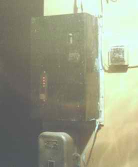
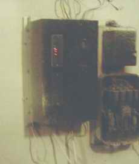
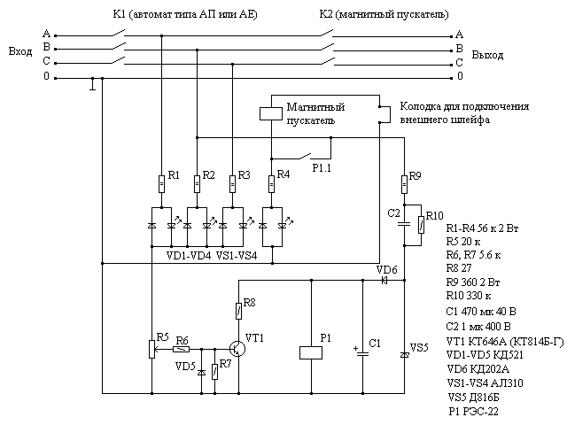
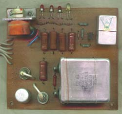

Устройство защиты трехфазных электродвигателей с реле контроля фаз
Устройство защиты трехфазных электродвигателей с реле контроля фаз используется для отключения двигателя при его перегрузке по мощности, а также при обрыве одной из фаз питающей сети. Магнитный пускатель устройства может быть подключен к внешней цепи управления. Для защиты от перегрузки по мощности используется автомат типа АП или АЕ. Для защиты от перегрузки обмоток при обрыве фазы питающей сети используется реле контроля фаз собственной разработки (для удешевления устройства).
Внешний вид устройства защиты (установлены на объектах - холодильных камерах):


Технические данные:
Схема устройства:

Описание:
На входе устройства защиты установлен автомат K1 типа АП или АЕ. Его номинальный ток выбирается по мощности применяемого электродвигателя (ток автомата = ((мощность двигателя : 3) : cosf) : 220, т. е. для двигателя мощностью 1.5 кВт - 2.5 А, 2.2 кВт - 4 А, 3.3 кВт - 6.3 А и т. д.). На выход устройства питающее напряжение проходит через контакты K2 магнитного пускателя. Его класс также выбирается, исходя из потребляемой мощности. Если требуется обеспечить управление двигателем от какого-либо датчика (давления, температуры и т. п.), то к колодке для подключения внешнего шлейфа подключаются замыкающие контакты датчика. Для питания реле контроля фаз используется балластная цепь R9C2, подключаемая к выпрямителю VS5VD6. Резистор R10 служит для разрядки конденсатора C2 при отключении устройства защиты. На выходе выпрямителя установлен конденсатор фильтра C1. Резисторы R1 - R3 обеспечивают суммирование напряжений всех трех фаз. Если фазные напряжения находятся в пределах нормы, то их векторная сумма равна нулю, и напряжения, снимаемого с движка потенциометра R5, недостаточно для открывания транзистора VT1. Реле P1 при этом находится во включенном состоянии и через замкнутые контакты P1.1 подает питание на магнитный пускатель. Если одно из фазных напряжений достаточно сильно понижается, то сигнал с движка потенциометра открывает транзистор VT1, который шунтирует реле P1. После того, как конденсатор C1 разрядится через транзистор VT1 и резистор R8, контакты реле размыкаются, и магнитный пускатель отключается. Так как в реальных условиях фазные напряжения несколько отличаются друг от друга (имеется "перекос фаз"), требуется подстройка чувствительности устройства защиты с помощью потенциометра R5. Положение его движка устанавливается таким, чтобы устройство защиты было включено при подключении всех трех фаз и отключалось при искусственном обрыве любой фазы. Светодиоды VS1 - VS3 служат для индикации наличия фазных напряжений. Светодиод VS4 горит, когда устройство защиты находится во включенном состоянии.
Конструкция:
Все элементы устройства защиты смонтированы на металлическом основании и закрыты сверху кожухом. В кожухе прорезаны окна: одно для доступа к автомату, другое - для наблюдения за состоянием светодиодов. Реле контроля фаз выполнено в виде печатной платы, внешний вид которой приведен на рисунке:

Состояние разработки:
Устройство защиты трехфазных электродвигателей с реле контроля фаз успешно испытано в реальных условиях эксплуатации (в том числе неотапливаемые помещения) в течение нескольких лет.
24.11.2003
14.02.2006
22.06.2010
Альтернативные источники
энергии
Компьютеры и
Интернет
Магнитные поля
Механотронные системы
Перспективные
разработки
Электроника и технология